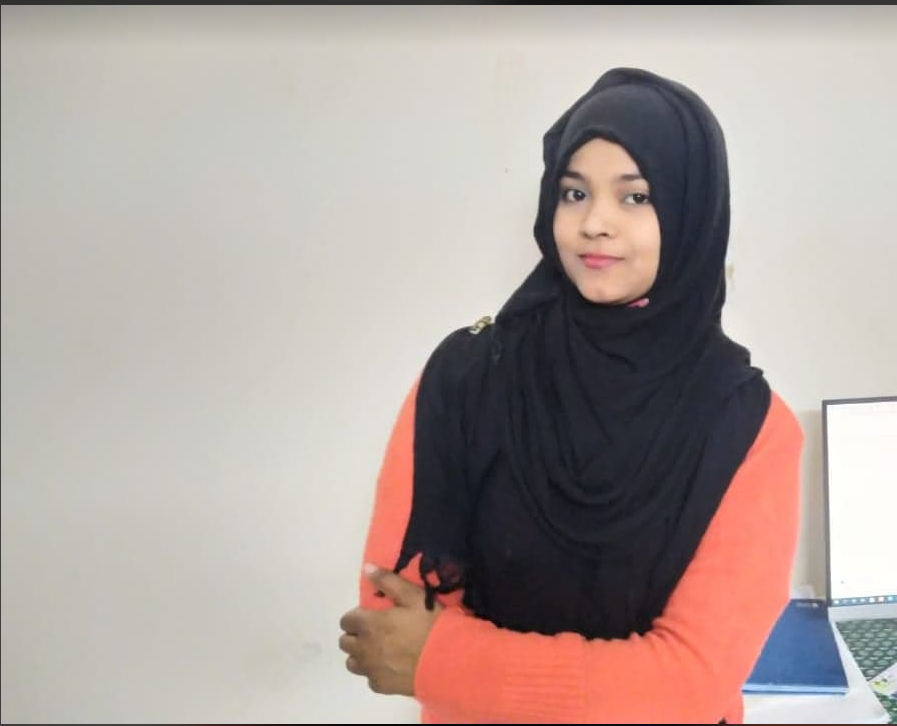

My name is Romana Akter Ruby. I am studying in Narsingdi Government College in Honours final year. I am 22 years old. I live in mirpur. I am a housewife. I enjoy reading books in my spare time. Gardening is my hobby. I am a person who is positive about every aspect of life. I love coding. I want to build a career through freelancing. That's why I came to learn coding. my mission is to create websites that client's love & that create the business results client's want from it.My passion is to create a website where clients can focus on their brand and at the same time make money online.Though my dream freelancing i will go to a very good position. While many people have dreams of becoming doctors and lawyers, I have always wanted to be a developer. I don’t remember when I fell in love with developing, but over the years, my passion for developing has increased. Over the past few months, I have started living this dream, and it gives me so much joy.
Click Here 